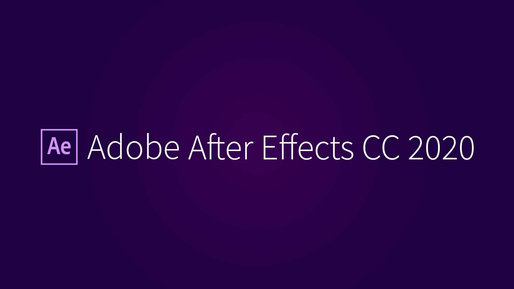

JIZTH
หน้า 1
หน้า 2
หน้า 3
หน้า 4
หน้า 5

4. เริ่มถ่ายทำ เเละค่อยๆเรียนรู้ องค์ประกอบต่างๆของคลิป
เช่น ภาพปกควรเป็นแบบไหน ,ลักษณะการตัดต่อ ,text และ effect หรือ pop-up ต่างๆ เพื่อดึงดูดความน่าสนใจ เมื่อคุณทำไปเรื่อยๆ จะสามารถจับทางได้เอง เเละคุณจะค่อยๆ เห็นรายละเอียดเล็กๆ น้อยๆ เช่น การเลือกใช้ font ให้เหมาะสมกับประเภทของคลิป หรือศึกษาเพิ่มเติมจากใน YouTube ก็ได้นะ เพราะมีคนใจดีมาแชร์ไว้เยอะเลยค่ะ